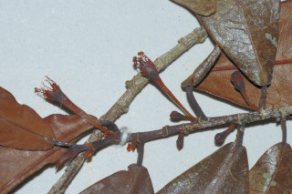
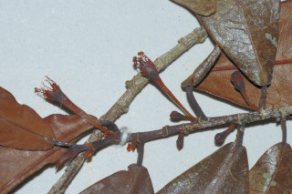

Branchlets slender, flattened.
ಕಿರುಕೊಂಬೆಗಳು ತೆಳುವಾಗಿದ್ದು ಚಪ್ಪಟೆಯಾಗಿರುತ್ತವೆ.
നേര്ത്തതും പരന്നതുമായ ഉപശാഖകള്.
Leaves simple, alternate, distichous; stipules in pairs 0.3 cm long, lanceolate, caducous and leaving scar; petiole 0.2-0.4 cm long, planoconvex in cross section; lamina 4-8 x 1.5-3 cm, elliptic, apex caudate - acuminate, base acute; margin entire, glabrous, chartaceous; midrib canaliculate above; secondary obscure and tertiary_nerves not visible.
ಎಲೆಗಳು ಸರಳವಾಗಿದ್ದು,ಪರ್ಯಾಯ ಜೋಡನಾ ವ್ಯವಸ್ಥೆಯಲ್ಲಿದ್ದು ಕಾಂಡದ ಎರಡೂ ಕಡೆ ಎದುರು ಬದರಿನ ಲಂಬ ಸಾಲಿನಲ್ಲಿರುತ್ತವೆ;ಕಾವಿನೆಲೆಗಳು 0.3 ಸೆಂ. ಮೀ. ಉದ್ದವಿದ್ದು ಜೋಡಿಯಾಗಿರುತ್ತವೆ ಹಾಗೂ ಭರ್ಜಿಯ ಆಕಾರದಲ್ಲಿದ್ದು, ಉದುರಿಹೋಗುವಂತವು, ಉದುರಿದ ಜಾಗದಲ್ಲಿ ಗುರುತುಗಳನ್ನು ಶೇಷವಾಗಿರಿಸುತ್ತವೆ; ತೊಟ್ಟುಗಳು 0. 2 - 0.4 ಸೆಂ.ಮೀ.ವರೆಗಿನ ಉದ್ದಹೊಂದಿದ್ದು,ಅಡ್ಡ ಸೀಳಿದಾಗ ಸಪಾಟ ಪೀನ ಮಧ್ಯದ ಆಕಾರ ಹೊಂದಿರುತ್ತವೆ;ಪತ್ರಗಳು 4 – 8 X 1.5 – 3 ಸೆಂ. ಮೀ. ಗಾತ್ರ, ಅಂಡವೃತ್ತ ಮಾದರಿಯ ಆಕಾರ, ಬಾಲರೂಪಿ- ಕ್ರಮೇಣ ಚೂಪಾಗುವ ತುದಿ, ಚೂಪಾದ ಬುಡ,ನಯವಾದ ಅಂಚು,ಕಾಗದವನ್ನೋಲುವ ಮೇಲ್ಮೈ ಹೊಂದಿರುತ್ತವೆ ಹಾಗೂ ರೋಮರಹಿತವಾಗಿರುತ್ತವೆ; ಮಧ್ಯ ನಾಳ ಪತ್ರದ ಮೇಲ್ಭಾಗದಲ್ಲಿ ಕಾಲುವೆಗೆರೆ ಸಮೇತವಿರುತ್ತದೆ; ಎರಡನೇ ದರ್ಜೆಯ ನಾಳಗಳು ಮಸುಕಾಗಿ ಕಾಣುವಂತಹವು; ಮೂರನೇ ದರ್ಜೆಯ ನಾಳಗಳು ಅಸ್ಪಷ್ಟ.
ലഘുവായ ഇലകള്, ഏകാന്തരമായി, തണ്ടിന്റെ രണ്ടുഭാഗത്ത് മാത്രമായടുക്കിയ വിധത്തിലാണ്; അടയാളം അവശേഷിപ്പിച്ചുകൊണ്ട് നേരത്തേ ഇളകിവീഴുന്ന 0.3 സെ.മീ നീളമുളള കുന്താകാര അനുപര്ണ്ണങ്ങള് ജോഡികളായി ഉണ്ടാകുന്നു; ഛേദത്തില് ഒരുവശം പരന്നും മറുവശം ഉരുണ്ടുമിരിക്കുന്ന ഘടനയുളള ഇലഞെട്ടിന് 0.3 സെ.മീ നീളം; പത്രഫലകത്തിന് 4 സെ.മീ മുതല് 8 സെ.മീ വരെ നീളവും 1.5 സെ.മീ മുതല് 3 സെ.മീ വരെ വീതിയും, ദീര്ഘവൃത്താകൃതിയുമാണ്, പത്രാഗ്രം നീണ്ടവാലോട് കൂടിയതും പത്രാധാരം നിശിതവുമാണ്; അവിഭജിതം, അരോമിലം, കടലാസ്പോലത്തെ പ്രകൃതം; മുഖ്യസിര മുകളില് ചാലുളളതാണ്; ദ്വിതീയ സിരകള് അപ്രസക്തവും ത്രിതീയ സിരകള് അവ്യക്തവുമാണ്.
சிறிய நுனிக்கிளைகள் மெல்லியது, தட்டையானது.
Flowers axillary, solitary.
ಹೂಗಳು ಒಂಟಿಯಾಗಿದ್ದು ಅಕ್ಷಾಕಂಕುಳಿನಲ್ಲಿರುತ್ತವೆ.
പൂക്കള് ഒറ്റയായി കക്ഷങ്ങളിലുണ്ടാകുന്നു.
இலைகள் தனித்தவை, மாற்றுஅடுக்கமானவை, இருநெடுக்கு வரிசையிலையடுக்கம் (டைஸ்டிக்கஸ்); இலையடிச்செதில்கள் ஒர் ஜோடி, 0.3 செ.மீ. நீளமானது, ஈட்டி வடிவானது, உதிரக்கூடியது மற்றும் தழும்புகளை ஏற்படுத்துகின்றன; இலைக்காம்பு 0.2-0.4 செ.மீ. நீளமானது, குறுக்குவெட்டுத் தோற்றத்தில் பிளேனோகான்வக்ஸ்; இலை அலகு 4-18 X 1.5-3 செ.மீ., நீள்வட்ட வடிவானது, அலகின் நுனி வால்-அதிக்கூரியது, அலகின் தளம் கூரியது, அலகின் விளிம்பு முழுமையானது, உரோமங்களற்றது, சார்ட்டேசியஸ்; மையநரம்பு மேற்புறத்தில் அலகின் பரப்பைவிட பள்ளமானது; இரண்டாம் நிலை நரம்புகள் தெளிவற்றது மற்றும் மூன்றாம் நிலை நரம்புகள் கண்களுக்கு புலப்படாது.
Drupe, narrow ellipsoid; 1-seeded.
ಡ್ರೂಪ್ಗಳು ಒಂದು ಬೀಜವನ್ನೊಳಗೊಂಡಿದ್ದು ಸಂಕುಚಿತ ಅಂಡಾಕಾರದಲ್ಲಿರುತ್ತವೆ.
കായ, ഒറ്റവിത്തുളള, വീതികുറഞ്ഞ ദീര്ഘഗോളാകാര ഡ്രൂപ് ആണ്.
மலர்கள் இலைக்கோணங்களில் காணப்படுபவை, தனித்தவைகள்


 
